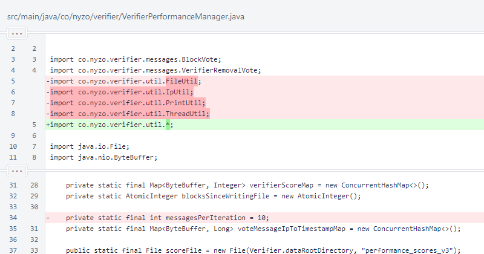
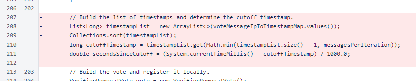
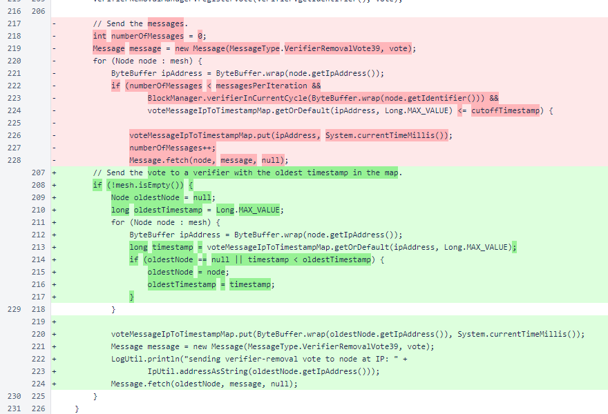

Nyzo version 599 (commit on GitHub) reduces the rate at which verifier-removal votes are sent.
This version affects only the verifier. No other run modes send verifier-removal votes.
This version is based on a GitHub issue concerning TCP message volume due to verifier-removal votes. While verifier-removal votes are important, they are not urgent. This version reduces the frequency of these vote messages from 10 per block to one per block.
In VerifierPerformanceManager, the messagesPerIteration constant was removed. The new process is unable to send a variable number of messages; it sends exactly one message per iteration.
In VerifierPerformanceManager.sendVotes(), the cutoff timestamp is no longer calculated. Instead of sending to multiple verifiers under a cutoff, the new logic sends to only one verifier with the oldest timestamp.
The new process sends the verifier-removal vote to a verifier with the oldest timestamp. The timestamp represents the last time this running that this verifier sent a removal vote to the other verifier. Initially, all of these timestamps will be 0. In the steady state, this is essentially a circular queue. While this process takes time to distribute votes, the time required is inconsequential. The verifier-removal process exists to ensure that underperforming verifiers are eventually removed. This process does not, to be effective, require swift action.
